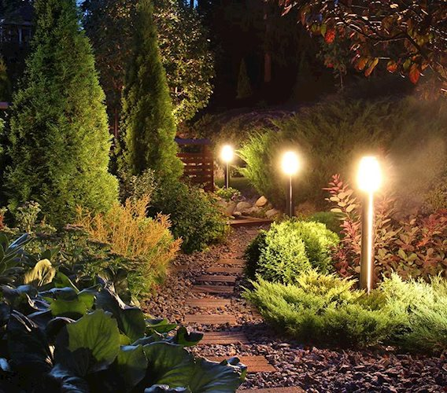

Illuminate Your Outdoor Space with vergel Landscape Lighting
As an experienced provider of high-quality outdoor lighting solutions, I'm excited to introduce you to vergel Landscape Lighting. In this comprehensive article, we'll explore the benefits of outdoor lighting, the various types of fixtures offered by vergel, and how we can help you design and install a customized lighting plan to transform your outdoor living space.
Introduction to vergel Landscape Lighting
At vergel Landscape Lighting, we are passionate about helping homeowners and businesses enhance the beauty, functionality, and safety of their outdoor environments. With years of industry experience and a commitment to excellence, we have established ourselves as a trusted leader in the landscape lighting industry.
Our team of expert designers and installers work closely with our clients to understand their unique needs and preferences, ensuring that the final lighting solution not only meets their aesthetic goals but also provides practical benefits. From illuminating pathways and highlighting architectural features to creating a warm and inviting ambiance, we strive to deliver exceptional results that exceed our clients' expectations.
Why Choose vergel Landscape Lighting?
When it comes to outdoor lighting, there are many options available on the market, but what sets vergel Landscape Lighting apart is our unwavering dedication to quality, innovation, and customer satisfaction. Here are a few key reasons why you should choose us for your outdoor lighting needs:
- Extensive Product Selection: We offer a wide range of high-quality lighting fixtures, including LED, low-voltage, and solar-powered options, allowing you to find the perfect solution for your outdoor space.
- Customized Design Approach: Our team of experienced designers will work closely with you to create a custom lighting plan that complements your landscape, architecture, and personal style.
- Exceptional Installation: Our skilled technicians will ensure a seamless installation process, minimizing disruption and delivering a professional, long-lasting result.
- Unparalleled Expertise: With years of industry experience, our team is equipped with the knowledge and skills to provide expert guidance and support throughout the entire project.
- Commitment to Sustainability: We are dedicated to promoting eco-friendly practices and offer energy-efficient lighting solutions to reduce your environmental impact.
Benefits of Outdoor Lighting
Investing in outdoor lighting can bring a multitude of benefits to your property, enhancing both its aesthetic appeal and practical functionality. Here are some of the key advantages of incorporating outdoor lighting into your landscape:
- Improved Safety and Security: Strategically placed lighting can illuminate pathways, stairs, and other high-traffic areas, reducing the risk of accidents and deterring potential intruders.
- Enhanced Curb Appeal: Thoughtfully designed outdoor lighting can highlight the architectural features of your home, landscaping, and other outdoor elements, creating a visually stunning and inviting atmosphere.
- Extended Usable Space: Outdoor lighting allows you to enjoy your outdoor living spaces well into the evening hours, extending the time you can spend entertaining, relaxing, or engaging in leisure activities.
- Increased Property Value: Homebuyers often prioritize outdoor lighting as a desirable feature, as it can significantly enhance the overall value and appeal of your property.
- Energy Efficiency: Modern LED and solar-powered lighting options are not only energy-efficient but also cost-effective, helping you save on your utility bills while reducing your carbon footprint.
Types of Lighting Fixtures Offered by vergel Landscape Lighting
At vergel Landscape Lighting, we offer a diverse range of high-quality lighting fixtures to suit a variety of outdoor settings and design preferences. Some of the key types of lighting fixtures we provide include:
- Path and Area Lighting: These fixtures are designed to illuminate walkways, driveways, and other high-traffic areas, ensuring safe and easy navigation.
- Accent Lighting: Used to highlight specific architectural features, landscaping elements, or focal points, accent lighting adds depth and drama to your outdoor space.
- Spotlights: Powerful and versatile, spotlights can be used to illuminate trees, sculptures, or other prominent outdoor features, creating a dramatic and eye-catching effect.
- Floodlights: Ideal for illuminating larger areas, such as patios, decks, or the perimeter of your property, floodlights provide ample, uniform lighting.
- Landscape Lighting: These fixtures are specifically designed to blend seamlessly with your landscaping, enhancing the natural beauty of your outdoor environment.
- Specialty Lighting: From low-voltage lighting to solar-powered options, we offer a range of specialized lighting solutions to meet your unique needs and preferences.
Designing Your Outdoor Lighting Plan with vergel Landscape Lighting

Designing an effective and visually appealing outdoor lighting plan requires a careful balance of aesthetic considerations and practical functionality. At vergel Landscape Lighting, we take a collaborative approach, working closely with our clients to understand their goals and preferences, and then crafting a customized lighting solution that brings their vision to life.
Our design process typically involves the following steps:
- Site Assessment: Our team will conduct a thorough evaluation of your outdoor space, taking into account the size, layout, and existing landscape features to identify the optimal placement and type of lighting fixtures.
- Lighting Design Consultation: We'll work with you to discuss your desired outcomes, such as enhanced safety, improved ambiance, or highlighting specific architectural or landscape elements.
- Lighting Plan Development: Based on our findings and your input, we'll create a detailed lighting plan that outlines the placement, type, and quantity of fixtures, as well as the overall lighting scheme.
- Fixture Selection: Our team will help you select the most appropriate lighting fixtures, taking into consideration factors like energy efficiency, durability, and aesthetic compatibility with your outdoor space.
- Installation Coordination: Once the plan is finalized, we'll schedule a convenient time to install the lighting system, ensuring a seamless and efficient process.
Throughout the design and installation process, our team will provide expert guidance and support to ensure that the final result exceeds your expectations.
Installation Process of vergel Landscape Lighting
At vergel Landscape Lighting, we understand that the installation process is a critical component of delivering a successful outdoor lighting project. Our experienced technicians follow a comprehensive installation protocol to ensure a smooth and efficient process, minimizing disruption to your property and maximizing the longevity of your lighting system.
The key steps in our installation process include:
- Site Preparation: Our team will carefully assess the installation site, marking underground utilities, and preparing the area for the safe and efficient installation of the lighting fixtures.
- Fixture Placement: Using the customized lighting plan, our technicians will meticulously position each fixture to achieve the desired lighting effects and ensure optimal coverage.
- Wiring and Electrical Work: Our licensed electricians will handle all the necessary wiring and electrical connections, adhering to local building codes and safety standards.
- Testing and Adjustment: Once the installation is complete, we'll thoroughly test the lighting system to ensure proper functionality and make any necessary adjustments to achieve the desired lighting levels and effects.
- Cleanup and Restoration: Finally, our team will clean up the work area, ensuring that your outdoor space is left in pristine condition, with minimal disruption to your landscaping or hardscaping.
Throughout the installation process, we prioritize open communication, keeping you informed of our progress and addressing any questions or concerns you may have.
Maintenance and Troubleshooting Tips for vergel Landscape Lighting

To ensure the long-term performance and efficiency of your vergel Landscape Lighting system, it's important to follow a regular maintenance routine and be prepared to address any issues that may arise. Here are some key tips to help you maintain and troubleshoot your outdoor lighting:
- Regular Inspection: Visually inspect your lighting fixtures on a periodic basis, checking for any signs of damage, wear, or debris buildup that could affect the performance of the system.
- Cleaning and Cleaning: Gently clean the fixtures using a soft cloth and mild, non-abrasive cleaning solution to keep them looking their best and functioning optimally.
- Bulb Replacement: Replace any burnt-out or malfunctioning bulbs promptly to maintain consistent lighting levels and prevent potential safety hazards.
- Electrical Checks: Periodically check the electrical connections and wiring to ensure they remain secure and free from any signs of damage or corrosion.
- Landscape Maintenance: Regularly trim or prune any vegetation that may be obstructing the lighting fixtures, ensuring unimpeded illumination.
- Troubleshooting: If you encounter any issues with your lighting system, such as flickering, dimming, or complete failure, our team of experts is available to provide prompt and reliable troubleshooting and repair services.
By following these maintenance and troubleshooting tips, you can ensure that your vergel Landscape Lighting system continues to perform at its best, enhancing the beauty and functionality of your outdoor space for years to come.
Customer Testimonials and Success Stories
At vergel Landscape Lighting, we take great pride in the positive impact our lighting solutions have had on our clients' outdoor living spaces. Here are a few testimonials from satisfied customers who have worked with us:
"The team at vergel Landscape Lighting transformed our backyard into a true oasis. Their attention to detail and design expertise has created a warm and inviting atmosphere that we now enjoy well into the evening hours. We couldn't be happier with the results." - John and Sarah, Homeowners
"As a business owner, I was looking for a way to enhance the curb appeal and overall ambiance of our commercial property. vergel Landscape Lighting delivered a comprehensive lighting plan that not only highlighted our architectural features but also improved the safety and security of our outdoor areas. The installation process was seamless, and the end result has exceeded our expectations." - Michael, Business Owner
"We were hesitant about investing in outdoor lighting, but the team at vergel Landscape Lighting made the process incredibly easy. Their design consultation and personalized approach ensured that the final lighting solution perfectly complemented our home and landscape. The energy efficiency of the LED fixtures has also helped us save on our utility bills." - Emily and David, Homeowners
These testimonials are a testament to our commitment to delivering exceptional results and exceeding our clients' expectations.
vergel Landscape Lighting's Commitment to Sustainability
At vergel Landscape Lighting, we are not only dedicated to providing high-quality outdoor lighting solutions but also to promoting sustainable practices that minimize our environmental impact. We believe that responsible stewardship of our natural resources is essential for the long-term health of our planet.
To that end, we offer a range of energy-efficient lighting options, including LED and solar-powered fixtures, which can significantly reduce energy consumption and greenhouse gas emissions. Additionally, we prioritize the use of durable, long-lasting materials in our products, reducing the need for frequent replacements and minimizing waste.
Our commitment to sustainability extends beyond the products we offer. We also strive to incorporate eco-friendly practices into our business operations, such as recycling, waste reduction, and the use of environmentally friendly transportation methods for our installation and maintenance teams.
By choosing vergel Landscape Lighting, you can feel confident that you are not only enhancing the beauty and functionality of your outdoor space but also contributing to a more sustainable future.
Conclusion: Enhance Your Outdoor Space with vergel Landscape Lighting
In conclusion, vergel Landscape Lighting is the premier choice for transforming your outdoor living space through the power of strategic lighting design. With our extensive product selection, customized approach, and unwavering commitment to quality and customer satisfaction, we are uniquely positioned to help you achieve the outdoor lighting solution of your dreams.
To get started on your outdoor lighting project, schedule a free consultation with our team of experts today. We'll work closely with you to create a personalized lighting plan that perfectly complements your home and landscape, while also providing practical benefits like improved safety, enhanced curb appeal, and increased property value. Contact us now to take the first step towards illuminating your outdoor space with vergel Landscape Lighting.